The original sentence
The original, for comparison.
ci0_the_original_sentence.flac, 2.5 s, mono
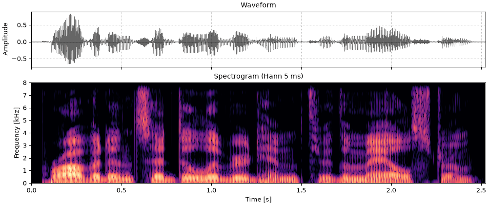
Code
fig, playhead = show(sentence)
sound = sentenceA cochlear implant replaces the hair cells with a row of electrodes in the cochlea. Its processor splits sound into a few frequency bands, keeps only each band's slowly varying envelope, and uses it to set the current on one electrode (Wilson et al., 1991). The fine structure inside each band, which carries most of what a normal ear hears as pitch, is thrown away. A noise vocoder does the same to a sound and plays the result to a normal ear: each band's envelope modulates a band of noise in its place (Shannon et al., 1995). It is the standard way to let a listener with normal hearing hear roughly what an implant passes on.
Everything on this page is one function, so.noise_vocode, applied to the sentence from
Seeing speech and to a short melody:
Press play and a line follows the sound across every time axis in its plots. Click any time axis to play from that point. Start with your volume low.
The vocoder lets you vary one thing at a time that an implant user cannot: how many bands, how fast the envelopes may change, and what carries them. That is how its classic results were found:
The vocoder below splits the sound with half-cosine filters equally spaced on the ERB scale between 80 Hz and 7.6 kHz (just under the 8 kHz Nyquist frequency of this 16 kHz recording), neighbors overlapping by half, takes each band's Hilbert envelope, lowpasses it at 50 Hz unless stated, and multiplies it into the same band of fresh Gaussian noise. The output has the input's RMS.
import matplotlib.pyplot as plt
import numpy as np
import sonore as so
plt.rcParams.update({"font.size": 9, "axes.titlesize": 10, "figure.dpi": 100})
def finish(snd):
"""How every sound in the gallery is played: 5 ms ramps, RMS 0.1, peak at most 0.95."""
snd = snd.ramp(5e-3).normalize(rms=0.1)
return snd.normalize(peak=0.95) if snd.peak > 0.95 else snd
# The sentence at its native 16 kHz. Sources: docs/speech/SOURCES.md.
sentence = finish(so.load("docs/speech/bdl_arctic_a0131.flac"))
fs = sentence.fs
F_LO, F_HI = 80, 7600
# Every spectrogram: a wideband STFT (Hann 5 ms), dB re its own maximum over 60 dB, 0 to 8 kHz.
wide = so.GaborFrame(0.005, 0.001, n_fft=1024)
FMAX, DB = 8000, 60
def bands(snd, n_bands, env_lowpass=50.0):
"""The envelopes the vocoder keeps: ERB bands, Hilbert envelopes, lowpassed."""
fb = so.cosine_filterbank(n_bands, F_LO, F_HI)
return fb.analyze(snd).envelopes(lowpass=env_lowpass, fs=1000)
def show(snd, envelopes=None, title=""):
"""Waveform, spectrogram and (if given) the band envelopes, on one time axis.
Returns the figure and the panels the playhead follows."""
n = 3 if envelopes is not None else 2
fig = plt.figure(figsize=(10, 2.0 + 2.2 * (n - 1)), layout="constrained")
axes = fig.subplots(n, 1, sharex=True, height_ratios=[0.55] + [1] * (n - 1))
snd.plot(axes[0], color="k", lw=0.4)
axes[0].set_title(f"Waveform{': ' + title if title else ''}")
wide.analyze(snd).plot(axes[1], db_range=DB, colorbar=False, fmax=FMAX)
axes[1].set_title("Spectrogram (Hann 5 ms)")
if envelopes is not None:
envelopes.plot(axes[2], db_range=DB, colorbar=False, fscale="linear", fmax=FMAX)
axes[2].set_title(f"The {envelopes.data.shape[1] - 2} band envelopes the vocoder keeps")
for ax in axes:
ax.set_xlim(0, snd.duration)
ax.set_xlabel("")
axes[-1].set_xlabel("Time [s]")
return fig, list(axes)Each band gives the listener one envelope: when there is energy in that region of the spectrum, but not what it is made of. Fewer bands mean a coarser picture of the spectrum, so formants that fall in the same band can no longer be told apart.
The original, for comparison.
ci0_the_original_sentence.flac, 2.5 s, mono

fig, playhead = show(sentence)
sound = sentenceOne band: the envelope of the whole sentence on a single noise. The rhythm and syllables are there; the words are not.
ci1_one_band.flac, 2.5 s, mono
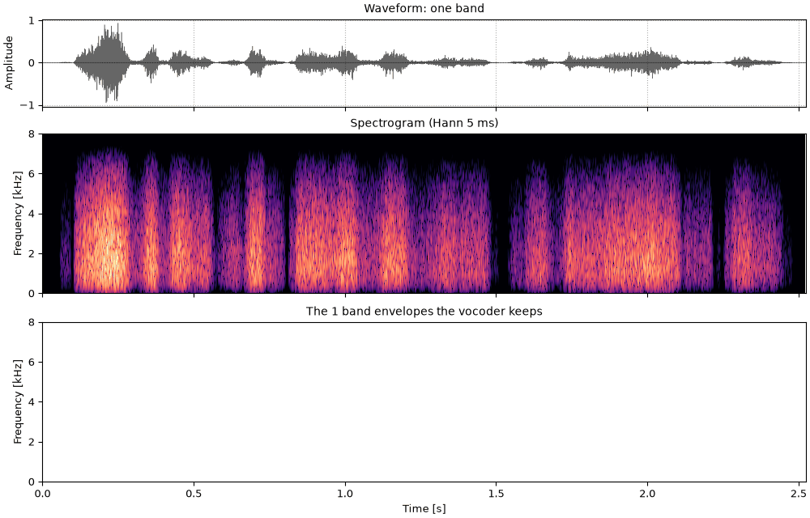
vocoded = finish(so.noise_vocode(sentence, 1, F_LO, F_HI, rng=1))
fig, playhead = show(vocoded, bands(sentence, 1), "one band")
sound = vocodedFour bands, about where Shannon et al. (1995) found listeners began to understand most words in quiet. The spectrogram shows four broad blocks, switching on and off with the syllables.
ci4_four_bands.flac, 2.5 s, mono
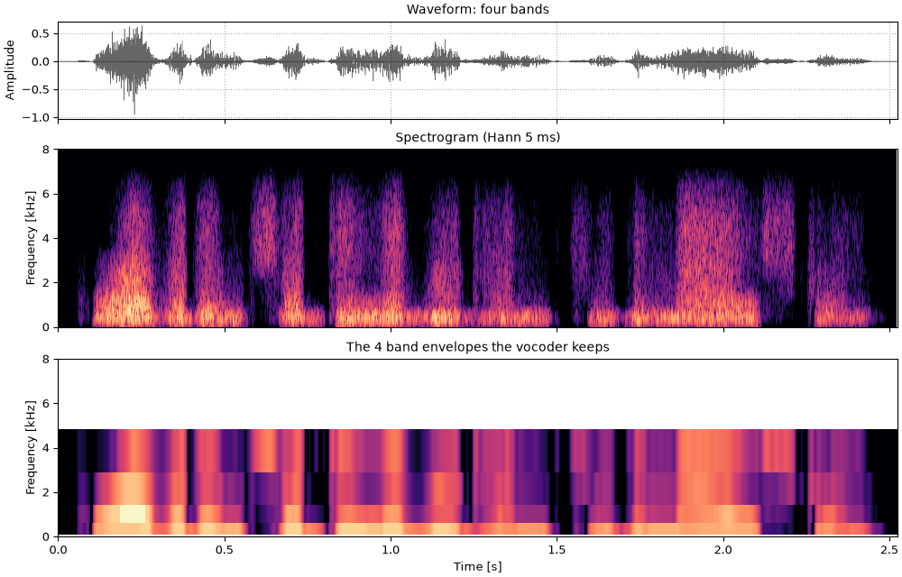
vocoded = finish(so.noise_vocode(sentence, 4, F_LO, F_HI, rng=4))
fig, playhead = show(vocoded, bands(sentence, 4), "four bands")
sound = vocodedEight bands, about as many as most implant users can use. The formant movements are now visible as energy moving from band to band.
ci8_eight_bands.flac, 2.5 s, mono
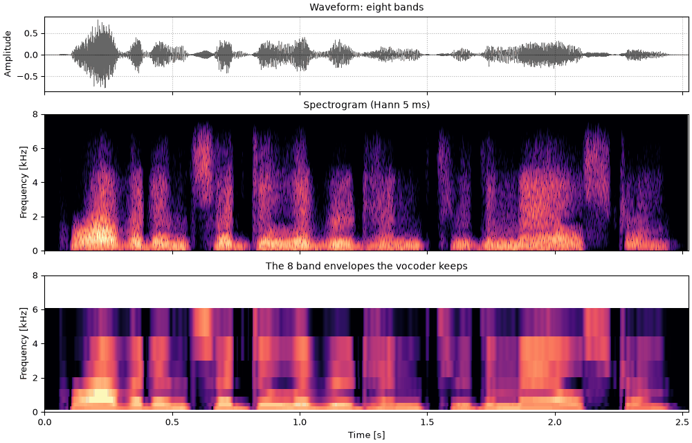
vocoded = finish(so.noise_vocode(sentence, 8, F_LO, F_HI, rng=8))
fig, playhead = show(vocoded, bands(sentence, 8), "eight bands")
sound = vocodedSixteen bands. The words are easy, but the voice is still a whisper: no band of noise has a pitch, so the talker's intonation is gone.
ci16_sixteen_bands.flac, 2.5 s, mono
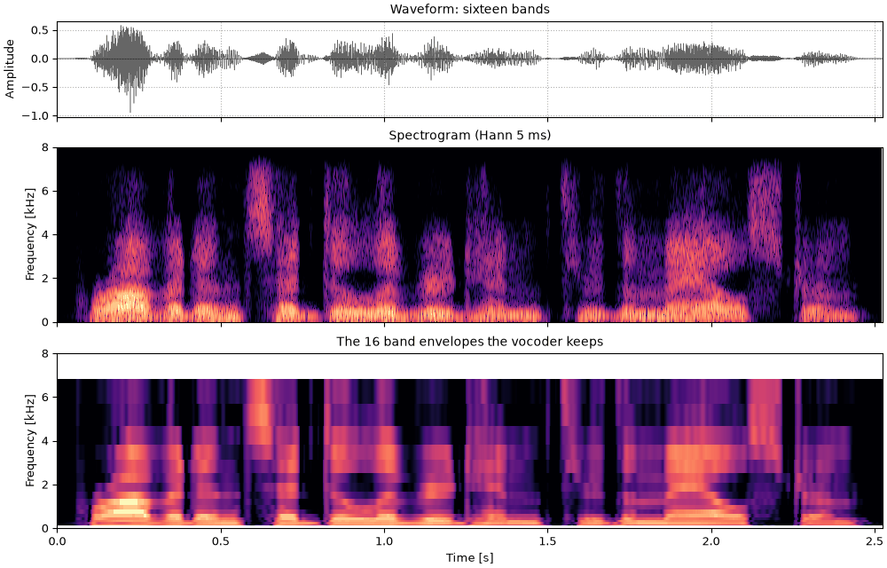
vocoded = finish(so.noise_vocode(sentence, 16, F_LO, F_HI, rng=16))
fig, playhead = show(vocoded, bands(sentence, 16), "sixteen bands")
sound = vocodedThe carrier is the vocoder's stand-in for the electrode, and noise is only one choice. A tone vocoder puts a sinusoid at each band's center instead. The envelopes are the same, but a tone has no envelope fluctuations of its own to blur them, so fast modulations survive better, and the result sounds more like a buzzy voice than a whisper. With few bands, the tones are heard as separate pitches. Speech through either is about equally intelligible (Dorman et al., 1997).
The sentence through eight tones, at the same eight band centers as the noise vocoder above.
ct8_eight_tones.flac, 2.5 s, mono
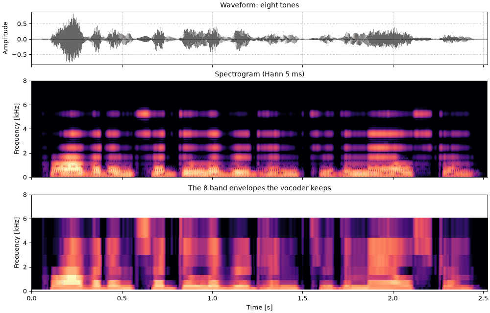
vocoded = finish(so.noise_vocode(sentence, 8, F_LO, F_HI, carrier="tone"))
fig, playhead = show(vocoded, bands(sentence, 8), "eight tones")
sound = vocodedThe vocoder's envelope lowpass decides how fast an envelope may change. At 50 Hz it keeps the syllables and the formant movements but not the voice's periodicity. Raise it above the fundamental, here about 90 to 190 Hz, and each band's envelope pulses once per glottal period: a temporal pitch cue, the kind implant users rely on. It is weak and works only for low pitches, a few hundred hertz at most.
One band's envelope over a stretch of voiced speech, lowpassed at 50 Hz and at 300 Hz. Only the 300 Hz envelope follows the glottal pulses.
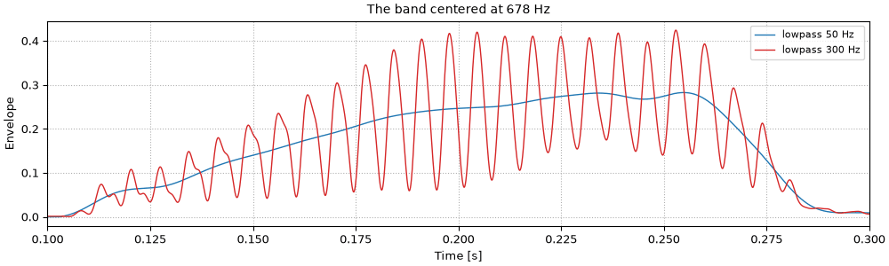
fb = so.cosine_filterbank(8, F_LO, F_HI)
sub = fb.analyze(sentence)
band = int(np.argmin(np.abs(fb.cfs - 700))) # the band nearest 700 Hz
fig, ax = plt.subplots(figsize=(10, 3.0), layout="constrained")
for cutoff, color in ((50, "tab:blue"), (300, "tab:red")):
env = sub.envelopes(lowpass=cutoff)
ax.plot(env.t, env.data[:, band, 0], color=color, lw=1, label=f"lowpass {cutoff} Hz")
ax.set(
xlim=(0.1, 0.3),
xlabel="Time [s]",
ylabel="Envelope",
title=f"The band centered at {fb.cfs[band]:.0f} Hz",
)
ax.legend(loc="upper right", fontsize=8)
ax.grid(ls=":")Eight bands with envelopes lowpassed at 300 Hz instead of 50 Hz. Listen for the intonation, faint but back. The wideband spectrogram shows the pulses as vertical striations again.
cp8_eight_bands_300_hz_envelopes.flac, 2.5 s, mono
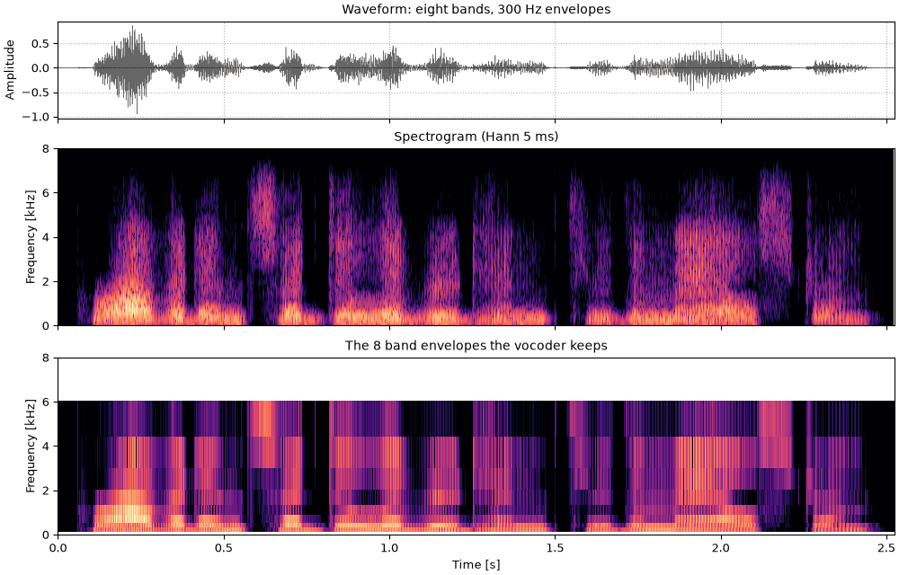
vocoded = finish(so.noise_vocode(sentence, 8, F_LO, F_HI, env_lowpass=300, rng=8))
fig, playhead = show(vocoded, bands(sentence, 8, env_lowpass=300), "eight bands, 300 Hz envelopes")
sound = vocodedThe same sentence read by a female talker (slt). The female fundamental, about 150 to 230 Hz here
by so.f0_track, is higher than the male talker's, so a temporal cue has to follow faster pulses.
sentence_female = finish(so.load("docs/speech/slt_arctic_a0131.flac"))
track_female = so.f0_track(sentence_female)
print(f"female F0: {track_female}")female F0: F0Track(528 time windows, 1 ch, 68% voiced, F0 148-227 Hz)
The female talker's sentence as recorded.
cf0_female_talker.flac, 2.6 s, mono
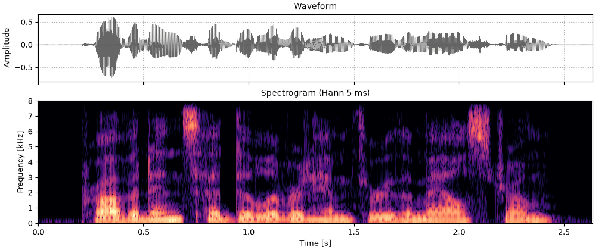
fig, playhead = show(sentence_female)
sound = sentence_femaleThrough eight noise bands with 50 Hz envelopes. As with the male talker's sentence, the words come through and the intonation does not; with the pitch gone, the main difference left between the two vocoded voices is where their formants sit.
cf8_female_talker_eight_bands.flac, 2.6 s, mono
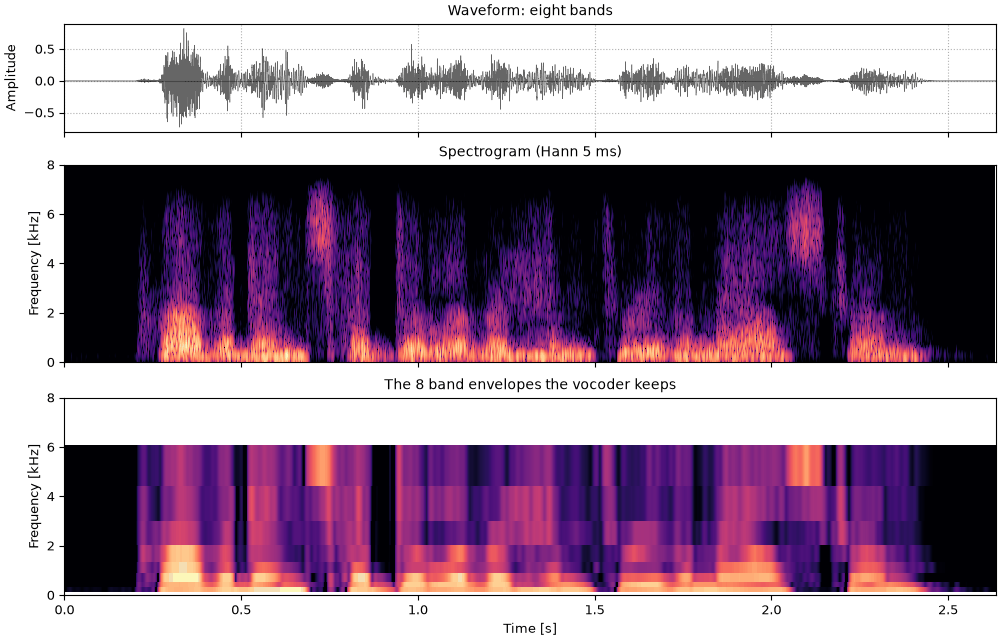
vocoded = finish(so.noise_vocode(sentence_female, 8, F_LO, F_HI, rng=8))
fig, playhead = show(vocoded, bands(sentence_female, 8), "eight bands")
sound = vocodedEight bands with 300 Hz envelopes. The female fundamental is still below the cutoff, so the envelopes pulse with it, as the male talker's do. Listen for the intonation, and compare it with the male talker's above.
cf8p_female_talker_eight_bands_300_hz_envelopes.flac, 2.6 s, mono
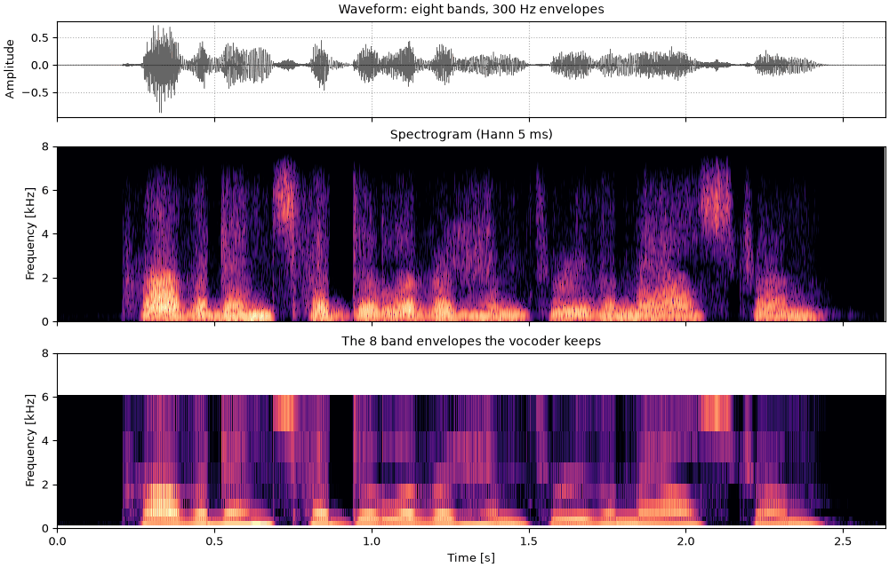
vocoded = finish(so.noise_vocode(sentence_female, 8, F_LO, F_HI, env_lowpass=300, rng=8))
fig, playhead = show(vocoded, bands(sentence_female, 8, env_lowpass=300), "eight bands, 300 Hz envelopes")
sound = vocodedSpeech can be understood without pitch; a melody cannot. The opening of "Twinkle, Twinkle, Little Star" in harmonic complex tones, low in the bass clef so that the fundamentals are in reach of a temporal cue.
notes = [131, 131, 196, 196, 220, 220, 196] # C3 C3 G3 G3 A3 A3 G3 [Hz]
durs = [0.4, 0.4, 0.4, 0.4, 0.4, 0.4, 0.8]
tones = [
so.harmonic_complex(d, fs, f, np.arange(1, 21)).ramp(20e-3) for f, d in zip(notes, durs, strict=True)
]
melody = finish(so.concat(tones))The melody as played.
cm0_the_melody.flac, 3.2 s, mono
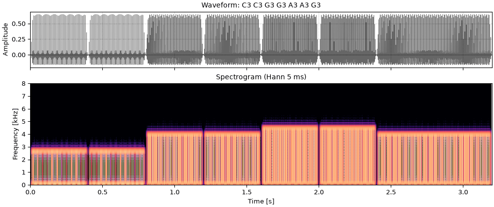
fig, playhead = show(melody, title="C3 C3 G3 G3 A3 A3 G3")
sound = melodyThrough eight noise bands with 50 Hz envelopes. Each note changes which bands are loud only a little, and the tune is close to gone.
cm8_eight_bands_50_hz_envelopes.flac, 3.2 s, mono
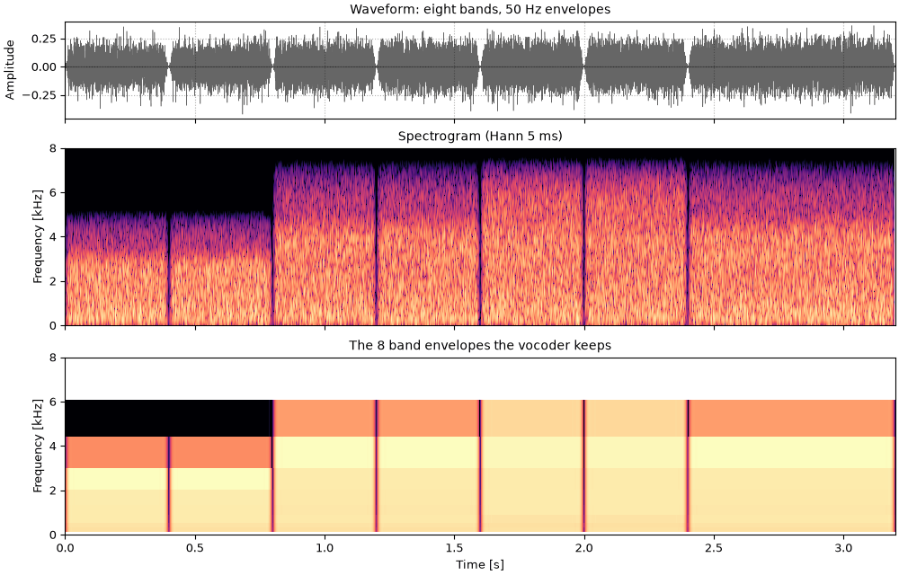
vocoded = finish(so.noise_vocode(melody, 8, F_LO, F_HI, rng=8))
fig, playhead = show(vocoded, bands(melody, 8), "eight bands, 50 Hz envelopes")
sound = vocodedThe same with 300 Hz envelopes: every band now pulses at the note's fundamental, and the tune comes back as a rough, buzzy pitch.
cm8p_eight_bands_300_hz_envelopes.flac, 3.2 s, mono
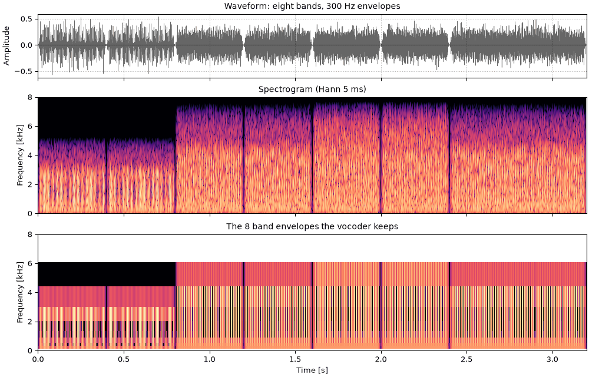
vocoded = finish(so.noise_vocode(melody, 8, F_LO, F_HI, env_lowpass=300, rng=8))
fig, playhead = show(vocoded, bands(melody, 8, env_lowpass=300), "eight bands, 300 Hz envelopes")
sound = vocodedA vocoder shows what is lost when only band envelopes are kept. It is not a model of any one implant user, and several things that matter for real implants are not on this page:
envelopes.noise_vocodeenvelopes.noise_vocodeenvelopes.noise_vocodeenvelopes.noise_vocode